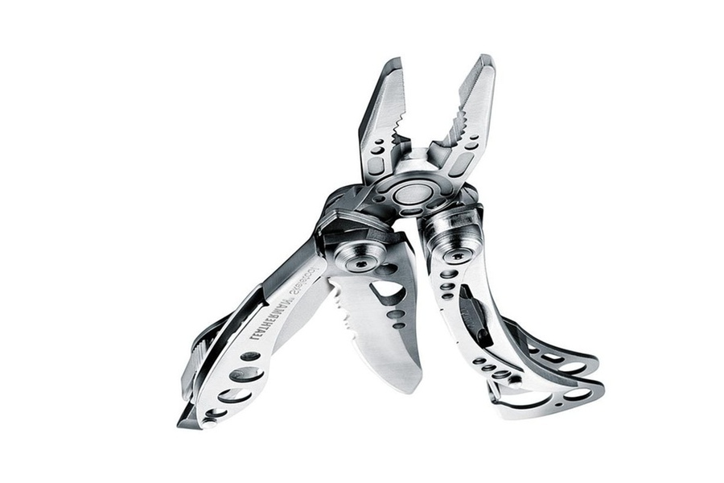

Chrome Developer Tools and HTML5
Boris Smus (@borismus)
July 2011
http://goo.gl/ERxNj
Boris Smus (@borismus)
July 2011
http://goo.gl/ERxNj
The first WebKit Web Inspector
A day in the life with chrome developer tools
Handy shortcuts
For serious JS applications
= more goodies
